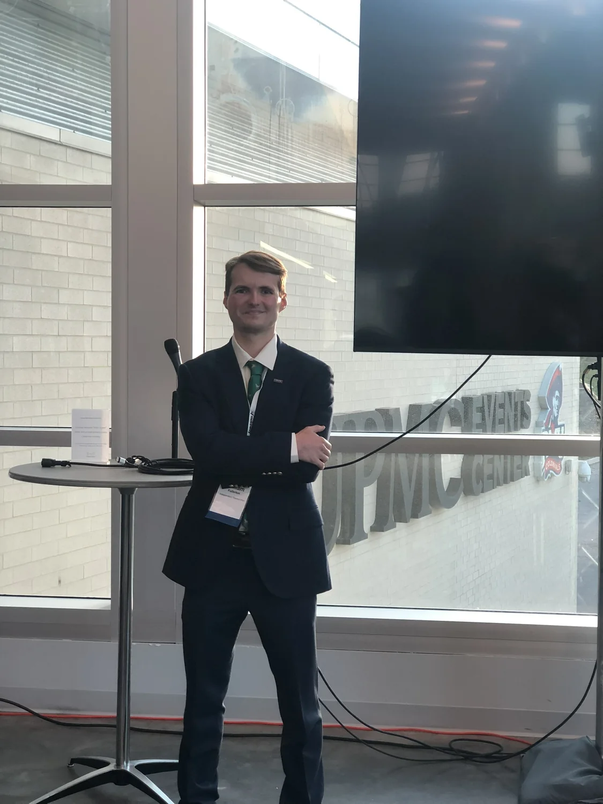

Ideas matter when we make them useful.
I’m interested in the space where technology meets people: understanding the real problem, then building something that helps.
Builder by instinct.
Researcher by curiosity.
I believe interesting ideas are only valuable when someone is willing to make them happen. That “make it happen” energy has shaped my work—from founding RMU’s first AI in Action Hackathon and bringing together five universities and four small businesses in six months, to developing AI and data-driven solutions, conducting independent research, filing a provisional patent application, and writing a book.
My background is in statistics and data science, with experience spanning applied AI, analytics, finance, and full-stack development. I’m particularly interested in using data and AI not simply to automate tasks, but to understand problems and create meaningful solutions.
I’m now expanding that perspective through psychology, exploring how a technical and quantitative background can help me better understand and serve the people behind the data.
I enjoy turning complicated ideas into things people can understand, use, and build upon. The question that keeps me moving is simple: How can we take what we know, make something useful with it, and use it to help people?
Connect on LinkedIn ↗
Background
- M.A. in PsychologyCarlow University · expected 2027
- B.S. in Statistics & Data Science, minor in FinanceRobert Morris University · 2025
- AI in Action HackathonFounder · launched with five universities and four small businesses
- Independent AI researchResearcher and provisional patent applicant